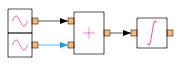
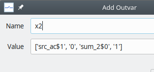
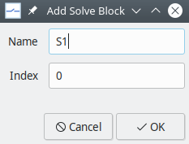
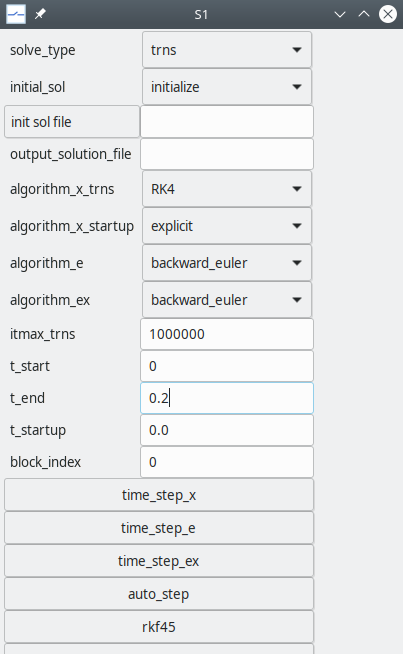
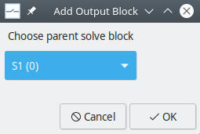
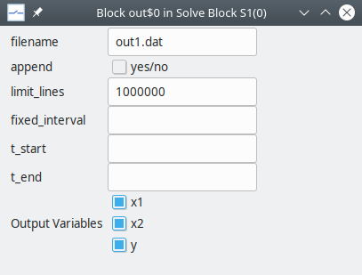

Creating a new project¶
It is assumed that you have successfully installed GSEIM on a linux computer. In this section, you will see how to make up a new GSEIM project, simulate it, and view the simulation results.
Consider the ODE given by
This ODE can be implemented with a GSEIM schematic by rewriting it as
In the following, a step-by-step procedure is given to make up the schematic diagram and obtain the simulation results for the above equations. Note that this is a rather simple ODE for which the analytic solution can be easily found and compared with the numerical solution given by GSEIM.
Start a new project. A canvas with an
Optionsblock will appear. Double-click on the options block, and setIdandTitle. Note that Id should only contain letters, digits, and the underscore character. In theGenerate optionfield, chooseCircuitto indicate that this schematic diagram is for a complete stand-alone circuit (system) and not a hierarchical block.
The next step is to bring in the required elements (blocks) from the library. We need two
src_ac(sinusoidal source) elements for \(x_1\) and \(x_2\), asum_2element and anintegrator. To bringsrc_acinto the canvas, select it from the library, and drag it into the canvas.
Place the components, keeping in mind the connections you will need to make.

Next, we need to set the properties (parameters) for each of the elements. In this example, the parameters for
sum_2andintegratorare not required to be changed (from their default values). For thesrc_acelements, we need to set the amplitude, frequency, and phase. Double-click on the element of interest, and edit its parameter values. For \(x_1 = 4 \cos \omega t\), the parametersa,f_hz,phi_degshould be set to 4, 10, and 90, respectively. For \(x_2 = 3 \sin \omega t\), they should be set to 3, 10, and 0, respectively, as shown below.(Note that it is also possible to add comments about a block by double-clicking on it and then selecting the
Advacnedtab.)Connect the elements as required. To make a connection between two ports, click on one of the ports and then the other.

We now want to indicate to the simulator which variables it should save (and make available for plotting). These are of two types:
Node value: This is the value of the variable represented by a node (wire). To select a node value as an output variable, left-click on the node (wire), and it will appear in a different colour as shown below.
Now, right click on that wire and select
Add to outvars. A box which describes the node (as a connection between node x of element xx and node y of element yy) appears. Give a suitable name to this output variable as shown below.Output parameter of an element: For each element, a few output parameters are declared in the library. To select an output parameter of a specific element, right-click on that element and select
Add to outvars. The output parameters available for that element will appear. For example, if you click on theintegrator, the following dialog box will be displayed. Selectyand give a suitable name to the corresponding output variable.
The next step is to set simulation parameters such as time step, choice of numerical method, etc. This is done by preparing one or more
solve blocks. In most cases, including the present example, we only need one solve block.To begin with, we need to add a new solve block. Click on
Edit\(\rightarrow\)SolveBlocks\(\rightarrow\)Add Solve Block. A dialog box for a new solve block appears as shown below. Choose a suitable name for this solve block. Theindexof this block can keep its default value.We have now added a solve block called
S1(0).Next, we edit the properties of the solve block
S1(0). Click onEdit\(\rightarrow\)SolveBlocks\(\rightarrow\)Edit Solve Block. A dialog box with several parameters appears. For the present example, we only need to set the following.- numerical method: We can choose Runge-Kutta order 4 (RK4), for example.
t_startandt_end, the starting and ending times for the simulation- the time step
tstep0_x
We now need to prepare an
output blockto inform the simulator about what data files should be created and which variables should be stored in each of them. For this purpose, we first need to add an output block. Click onEdit\(\rightarrow\)OutputBlocks\(\rightarrow\)Add Output Block. The following dialog box appears.Each output block is associated with a parent solve block. In this case, there is only one solve block, so there is no need to exercise any choice.
Edit the output block added in the previous step by clicking on
Edit\(\rightarrow\)OutputBlocks\(\rightarrow\)Edit Output Block. The following dialog box appears.Note that the output variables listed in this box are those declared earlier. Select the output variables of interest, and assign a name to the output file (which will be created by this output block).
You are now ready to simulate the system. Save the project file in the directory of your choice, naming it
test_1.grc(wheretest_`comes from theIdin theOptionsblock). Click onGenerate flow graph, thenExecute flow graph. At this stage, the data file specified in your output block would be created in the directory~/gseim_gui/gseim/output/. Click onView results. The plotting GUI will appear in a separate window. Click onBrowse filesand select~/gseim_gui/gseim/output/test_1.in. After that, select the x and y variables as shown in the following figure to view \(y(t)\).
{kind=link}
{kind=link}
{kind=link}
{kind=link}
{kind=link}
{kind=link}
{kind=link}